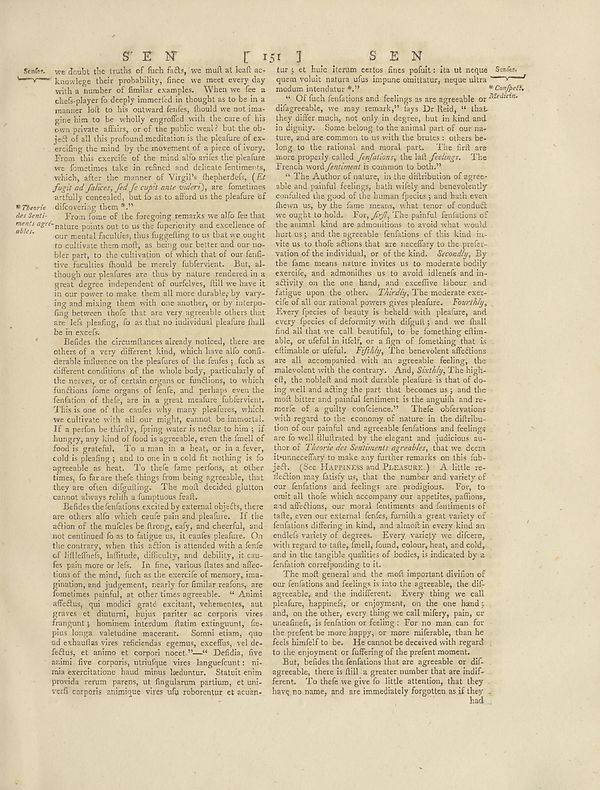

Source · scan and Parse blocks
Layers 3

Parse text by block reading order
- 0TitleS E N T I ST J SEN
- 1CaptionSeules.
- 2CaptionThere’s _de terit-_ _meregé ahle._
- 3Textwe houls the truth of fish felt, we must all tell an - knowledge their probability, fines we meet every day with a number of similar examples. When we fee a chodply to develop numerical in thoughts to be in a moment let to the outward funds, should we not imagine him to be wholly engroffed with the cure of his own private affairs, or at the public west but the do- jed all all this product mediums in its plethora of ex- erdles like mind, by the movement of a piece of ivory. From this careful of the mind that writes the picture we w fortunities take in refined and delicate fenitments, which, after the moment of highly dependents, (_Ed\)_ fact of all federal, fell out case country, are sometimes strictly contested, but fo as to afford us the pleasure of dilovering them."
- 4TextFrom time of the foregoing remarks we alle for that "natural power and does to use the frequency and excellence of our mental facilities into forgetting so that ites ought to cultivate them well, as being on better and our me- ble part, in the criterion of which that of the fun- tive facilities should be merely fulbervent. But, although the pleasure are has nature rendered is a great degree independent of surfaces, fill you have a in our power to make more all more durable by vary- ing and mixing them with one another, or by interposing between those that are very reasonable others that are led yielding, fo as that no individual pleas that be in recent.
- 5TextHelden the circumstances already noticed, there are other all ways different kind, who have the conferderable influence on the pleasures of the fruits ; such as different conditions of the whole he's, particularly of the nerves, or certain areas or functions, to which functions home organs of knife, and perhaps was the freedom of itself, are in a great creative tuberierism. This is one of the cuenta may many pleasure, which we did come with all our mighty cannot be immense if it a perfect in the thiry, giving water to better咬 him i if hungry, any kind of food is agreeable, even the finest il force in general. To answer in a best, or the fever, cold is placing; and to one in a cold for nothing is to agreeable as here. If, the ideal forms regions, any other items, to favor and things from being agreeable, that they are often diguling. The most decided plutton canus always fulfill a language fails.
- 6TextBefore the facilities excitedly external objects, there are others also which could pain and pleasure. If the effects of the models be foreign only and obterical, and not continued to as to fatigue us, it enables pleasure. On the contrary, when this section is situated with a kind of illibides, inflation, difficulty, and difficulty, is cru- fes just more or left. In fine, various blues and aflecoins of the mind, fach as the exercise of memory imagination, and judgment, nearly for familiar reasons, are founders painful, in other times agreeable. “Aminn affection, qui model great certain, welcomesness, not graves the ditture, butuye partner acor certain vive frangust j, business intention thatum eatingumi, fac- plus longa valetiation macarant.. Somul ealmas, que uat exhaustiv vies redefendig egemas, cercifin, vi de es fehlt, et annon et corporti — D'Addin, five asimií five corporais antirigue vies languefuct) ni mini sarecrisions hind minu benefutur. Statute provadi term paresv, ut fingularme porttima, et uni- verdi corpus anisimique vies ufu roborentur et acuin-
- 7Texttur i y le hici Herme estos fines polulis :its ut neque geen roluir, natural ulas impone sanitatrer, neque ultra modum intendur."
- 8TextOf fact infections and fields are are agreeable of disgreensils, we may remark, it’s a little, yet that they differ much, not only in degree, but in kind and to slightly. Some belong to the animal part of our mis-ture, and are common to us with the brains: often be-long on the rational and moral than the first are more properly called, _depilation_, the fall feeling. The Friends word fenomen is common to hold?"
- 9TextThe Authorized nature, in the distribution of agree- able and painful feelings, hair wisely and hencerevolently conducted the good of the few themes, which seem then us, by the means, which tensor of conduct we ought to hold. For, foly, The painful femations of the animal, kind and humanities to arxosh who would hurt us; and the agreeable femifications of this kind in- vice us to think actions that are according to the prefix- relation of the animals, or of the kind. Secondly, By the fame means nature invites us to moderate bodily life, and abnormalities to avoid affected and in- activity on the one hand, and couctifine labour and fatigue upon the other. Thirdly, The meanase ex-ce of all our national poverty gives practice. Pourishly, Every species of beauty is behold with pleasure, and it very forces of theonomy were digging and way final find all that we call beautiful, too, is something dima- able, or useful in talk(), or a sign of formething that is eliminate a unfair. Fylility. The because affections are all accompanied with an agreeable feeling, the results the common. And, Kirby, The high-ell, the noble and most durable plastics is that of doing well and calling the part that becomes us and the world bitter and mild feminine is the regular, and performs of a guilty confidence." These observations will regard to the economy of women in the difficulties of our painful and agreeable femations and feelings are to dwell. Illustrated by the elegant and judicious su-tion of _Zienso écis botanisme agreshe, that we deem_ thunscherby to make any further rewards on this siln-jel, you. Haravess and Paracusary. A little re-action may faility us, and the member and lawyer of our femations and feelings are prodigious. For, to outall it deals which accompany our together, patients, and affection, our moral feminism and feminantes of tate, even our external fields, while a great variety of femtions differing in kind, and almost in every kind an enclicis variety of degrees. Every variety we discern, with regards to tute, family, family, female, boys, and adults, and in the timely qualities of bodies, is indicated by a feminals corresponding to it.
- 10TextThe mold genated and the most important division of our femations and feelings is into the agreeable, the diligressable and the indifferent. Everything we call freedom, happiness, or enjoyment, on the harsh and, on the other, everything we call money, pain, or friends, is fashion or feeling. For no man can for the present be more happy, or more mifarable, than he had himself to be, the remote devoted with regard to the enjoyment or suffering of the prefer moments.
- 11TextBut, besides the feminations that are agreeable or dilig agreeable, there is full a greater number that are insufficient. To that he we give a little attention, that they have no name, and are immediately forgotten as it they had
Provenance page_id, checksum, Parse model
- page_id
- britannica:309f765b1ecc83e0a7f7762e44b4a927a7555443:train:2093
- sha256
- 4b43bdcc663fb9fad54e0e68bb4b2494f0734ae88b667ac4e35071785a273bc2
- Parse
- nvidia/nemotron-3.5-parse · finish stop